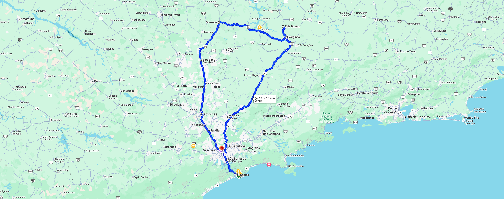

Mitsui Sul de Minas trip
Mitsui and KEY Coffee visit to main Varginha suppliers, July 2025
Guests: Mitsui: Nakaya, Okada and Kurobe and KEY COFFEE: Mr. Iwasaki and Mr. Ueno | Wolthers: Daniel, Svenn and Tom
 Cars: two Land Rover Discoveries and a Jeep Wrangler / Drivers Petter Anderson, Svenn Wolthers and Edgar Gomes
Cars: two Land Rover Discoveries and a Jeep Wrangler / Drivers Petter Anderson, Svenn Wolthers and Edgar Gomes
Route Map - Sul de Minas and Varginha Region

Saturday, July 19th, 2025
10:00
Meeting with Sucafina at Sucafina office (office will be empty due to weekend)
10:45
Head to Wolthers office for a coffee
11:00
Meeting with Cofco at Wolthers & Associates
11:45
Cupping at Wolthers & Associates
12:30
Lunch
Sunday, July 20th, 2025
08:00
Leave to Varginha in three cars (5 hours drive)
12:00
Lunch en route
19:00
Meet Key Coffee Sunday night (2 people from Key Coffee and 1 person from Mitsui) at the Class Hotel
20:00
Overnight at the Class Hotel
Monday, July 21st, 2025
07:30
Leave hotel to Gardingo
08:00
Visit to Gardingo Trading (host: Leo and Abraão Gardingo)
10:00
After Gardingo one car returns to São Paulo with Mr. Iwasaki and Mr. Ueno from Key Coffee (4 people + driver/ Jeep Wrangler)
11:00
Mitsui visit to Minasul with Nakaya, Daniel, Tom and Svenn (Land Rover Discovery)
12:30
Lunch
14:00
Visit to Café Três Corações (host: Mr. Rogerio Otaviano)
15:00
Visit to Brascof (host: Artur Ornelas)
17:00
Visit to Cocatrel (host: Francisco Pereira)
19:00
Departure to Guaxupé City (3 hours drive)
22:00
Overnight at the Ibis Hotel
Tuesday, July 22nd, 2025
08:00
Arrive at Cooxupé
11:00
Visit to SMC
12:00
Drive to Alfenas
13:00
Lunch with Monte Alegre: Mr. Jose Francisco and Mr. Helio Leite
14:00
Cupping at the farm
15:00
Brief visit at farm
16:00
Drive to São Paulo Pullman hotel
End of Coffee Trip